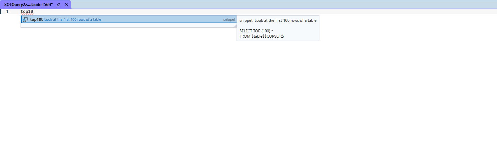
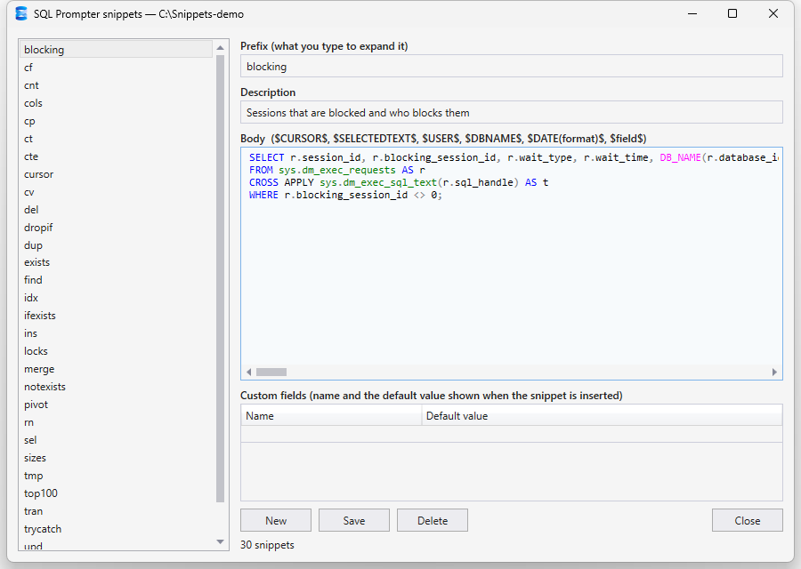
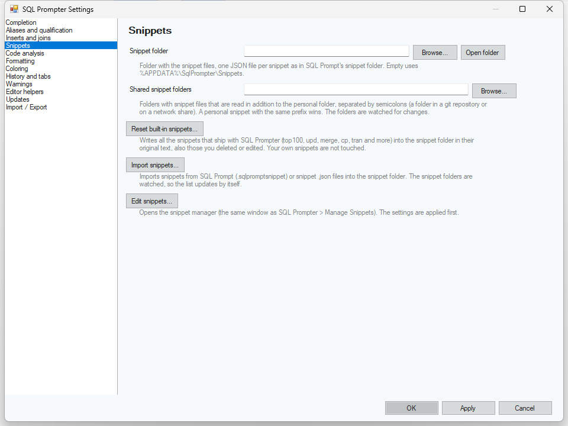

Snippets
Text templates expanded from a prefix, with fields, and a way to wrap the selection.
Using a snippet

- Type the prefix. The snippet is in the suggestion list next to the other items.
- Tab (or Enter, or Space when the prefix is complete) expands it. Lines are indented like the line they go into.
- If the snippet has fields, the caret goes to the first one. Tab / Shift+Tab cycle between the fields, typing replaces the selected default value, a field that appears several times is updated everywhere at once, Enter moves on and ends the editing after the last field, Esc ends it at once. The caret finally goes to
$CURSOR$.
Snippet body
| Placeholder | Replaced by |
|---|---|
$CURSOR$ | Where the caret ends. |
$SELECTEDTEXT$ | The selected text (for Surround Selection With Snippet). |
$USER$ | The name of the Windows user. |
$DBNAME$ | The database of the window. |
$DATE(format)$ | The current date in a .NET format, for example $DATE(yyyy-MM-dd)$. |
$field$ | A custom field. Its default value is set in the Custom fields table of the manager and shown highlighted when the snippet is inserted. |
The snippet manager

The manager lists the snippets by prefix; the body is colored (fields in bold), and the fields have their own table. New starts a snippet, Save writes it, Delete removes it. Ctrl+Z does not work inside the body box (the coloring rewrites the text); keep the text in the editor of your choice if you need undo. The same window opens from Settings > Snippets > Edit snippets....
Commands
| Command (SQL Prompter menu) | What it does |
|---|---|
| Surround Selection With Snippet... | Lists the snippets that use $SELECTEDTEXT$; the chosen one wraps the selection (for example ISNULL($SELECTEDTEXT$, 0)). |
| New Snippet From Selection... | Opens the manager with the selected text as the body of a new snippet. |
| Manage Snippets... | Opens the manager. |
A run in the query history can also be turned into a snippet (Make A Snippet).
Where snippets live
- One JSON file per snippet in
%APPDATA%\SqlPrompter\Snippets, or in the folder set in Settings > Snippets > Snippet folder. The format is the one of the snippet folder of SQL Prompt; a folder copied from SQL Prompt works as is. - Shared snippet folders (semicolon-separated: a folder in a repository, a network share) are read in addition to the personal folder. A personal snippet with the same prefix wins; the manager marks shared ones (shared), and saving one writes a personal copy. All folders are watched and reload after a change.
- The folders are watched, so a file you add or edit is picked up without a restart.

Built-in snippets and import
About 30 snippets ship with SQL Prompter (queries such as top100, sel, cnt, data changes such as ins, upd, del, merge, structure such as ct, idx, control flow such as tran, trycatch, cursor, and information queries such as blocking, locks, sizes). Each is written to the folder once at the first start, so a snippet you edit or delete is never written again, and one of yours with the same prefix is skipped. Settings > Snippets > Reset built-in snippets... writes the originals back (your own snippets are not touched). Import snippets... converts .sqlpromptsnippet backups of SQL Prompt, and copies .json snippet files, into the folder.